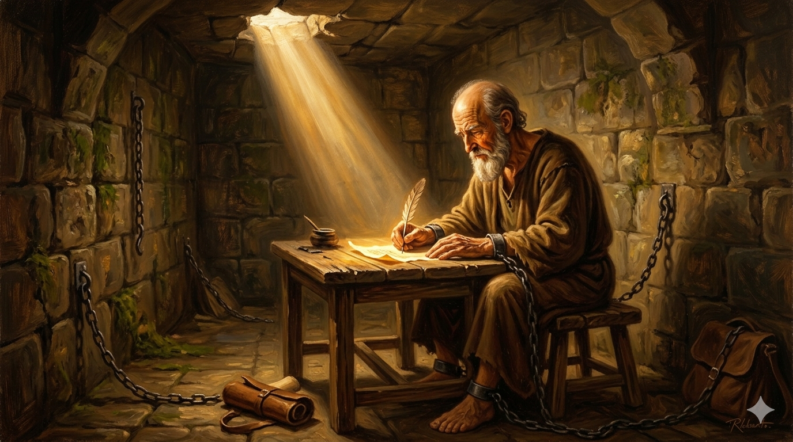
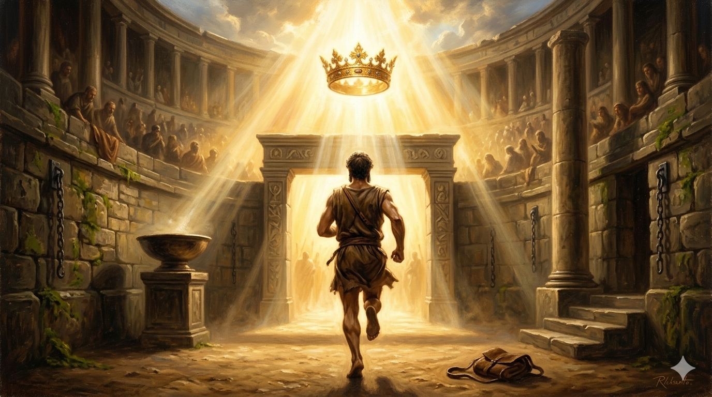

로마 감옥의 어두운 석실 안, 쇠사슬에 묶인 노사도 바울이 양피지에 마지막 편지를 써 내려가는 모습 — 그의 눈빛에는 두려움 대신 깊은 평화와 확신이 담겨 있고, 천장 틈새로 새어 들어오는 한 줄기 빛이 그의 손과 양피지를 비춘다
"전제와 같이 내가 벌써 부어지고 나의 떠날 시각이 가까웠도다 나는 선한 싸움을 싸우고 나의 달려갈 길을 마치고 믿음을 지켰으니 이제 후로는 나를 위하여 의의 면류관이 예비되었으므로 주 곧 의로우신 재판장이 그 날에 내게 주실 것이며 내게만 아니라 주의 나타나심을 사모하는 모든 자에게도니라" — 디모데후서 4:6–8
디모데후서는 바울이 남긴 마지막 편지입니다. 그는 로마에서 두 번째로 투옥된 상태였고, 네로 황제 치하에서 곧 순교할 것을 직감하며 이 편지를 썼습니다. "전제와 같이 내가 벌써 부어지고" — 전제(奠祭)는 제단에 포도주를 쏟아 붓는 제사입니다. 바울은 자신의 죽음이 하나님께 드리는 마지막 제사임을 선언합니다. 죽음을 패배로 보지 않고, 하나님께 바치는 예배로 바라본 것입니다. 이 한 문장에 바울의 신앙 세계 전체가 담겨 있습니다.
그는 세 가지 과거 완료형으로 자신의 삶을 정리합니다. 선한 싸움을 싸웠고, 달려갈 길을 마쳤고, 믿음을 지켰습니다. 이것은 자랑이 아닙니다. 오직 은혜로 마친 하나님의 선물에 대한 감사의 고백입니다. 그리고 미래를 향해 눈을 돌립니다 — 의의 면류관이 예비되어 있다고. 그것은 자신만이 아니라 "주의 나타나심을 사모하는 모든 자"에게 주어질 것이라고 말합니다. 죽어가는 자리에서도 혼자 가는 것이 아니라 모든 성도와 함께임을 선언하는 것입니다.

결승선에 다가선 달리기 선수의 모습을 고전적 유화 풍으로 표현 — 결승 테이프 너머로 황금빛 빛이 쏟아지고, 관중석은 보이지 않지만 하늘에서 찬란한 빛의 관이 내려오는 듯한 분위기. "달려갈 길을 마치고"의 상징적 장면
"선한 싸움을 싸우고 나의 달려갈 길을 마치고 믿음을 지켰으니" — 바울의 이 고백은 삶의 마지막 순간이 아니라, 매일 매일의 삶으로 쌓아진 것입니다. 우리가 인생의 끝에서 이 고백을 할 수 있으려면, 오늘 하루를 어떻게 살아야 할지를 묻게 됩니다. 큰 영웅적 행위 하나가 아니라, 작은 충실함들이 쌓여 "선한 싸움을 다 싸웠다"는 고백이 됩니다.
"주의 나타나심을 사모하는 모든 자에게도" — 면류관은 바울 한 사람에게만 주어지는 것이 아닙니다. 예수님을 사모하며 살아가는 모든 사람에게 약속된 것입니다. 지금 이 묵상을 읽고 있는 당신에게도 동일한 약속이 있습니다. 오늘 하루 주님의 나타나심을 사모하며, 내게 주어진 길을 한 발 한 발 충실히 걸어가십시오.
인생의 끝에서 바울처럼 말할 수 있기를 바랍니까?
그렇다면 오늘 당신의 싸움을 포기하지 마십시오.
달려갈 길이 아직 남아 있다면, 그것은 아직 은혜가 있다는 뜻입니다.